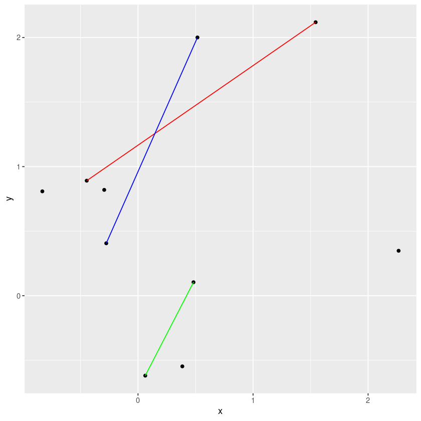

PlotBaseSpotify <- function() {
ggplot(spotify_df, aes(y=track_popularity, x=danceability)) +
geom_density_2d_filled()
}
PlotBaseSpotify()
Some \(\LaTeX\) needs to go here for Quarto’s own crazy reasons.
Suppose we’re a Spotify engineer and we pulled this data from one datacenter at one particular time, and we’re exploring / sanity checking the ML outputs.
We’ll assume that song popularity is relatively objective (e.g. number of listens), but the various song features (particularly danceability) are the output of ML systems that we want to sanity check.
We hope that our ML features are at least somewhat related to popularity. (Why?) Our whole problem is that this graph is not easy to interpret:
PlotBaseSpotify <- function() {
ggplot(spotify_df, aes(y=track_popularity, x=danceability)) +
geom_density_2d_filled()
}
PlotBaseSpotify()
Basically we want some kind of low-dimensional summary of a potentially complex relationship in the data.
For most of this class, we’ll be studying the “least squares fit”:
\[ \begin{align*} \y_n :={}& \textrm{Popularity} \\ \x_n :={}& \textrm{Danceability}\\ y_n ={}& \beta_1 \x_n + \beta_0 + \res_n \end{align*} \]
Here are some key quantities and their names:
For a linear model, we also have:
We might also have estimates of these quantities:
When we form the estimator by minimizing the estimated residuals, we might call the estimate
An estimate will implicitly be least-squares estimates, but precisely what we mean by an estimate may have to come from context.
Note that for any value of \(\beta\), we get a value of the “error” or “residual” \(\res_n\):
\[ \res_n = \y_n - (\beta_1 \x_n + \beta_0). \]
The “least squares fit” is called this because we choose \(\beta_0\) and \(\beta_1\) to make \(\sumn \res_n^2\) as small as possible:
\[ \begin{align*} \textrm{Choose }\beta_1,\beta_0\textrm{ so that } \sumn \res_n^2 = \sumn \left( \y_n - (\beta_1 \x_n + \beta_0) \right)^2 \textrm{ is as small as possible.} \end{align*} \]
The quantity we’re trying to minimize is smooth and convex, so if there is a minimum it would satisfy
\[ \begin{align*} \fracat{\partial \sumn \res_n^2}{\partial \beta_0}{\bhat_0, \bhat_1} ={}& 0 \quad\textrm{and} \\ \fracat{\partial \sumn \res_n^2}{\partial \beta_1}{\bhat_0, \bhat_1} ={}& 0. \end{align*} \] These translate to (after dividing by \(-2 N\))
\[ \begin{align*} \meann \y_n - \bhat_1 \meann \x_n - \bhat_0 ={}& 0 \quad\textrm{and}\\ \meann \y_n \x_n - \bhat_1 \meann \x_n^2 - \bhat_0 \meann \x_n ={}& 0. \end{align*} \]
Let’s introduce the notation
\[ \begin{align*} \overline{y} ={}& \meann \y_n \\ \overline{xy} ={}& \meann \x_n \y_n \\ \overline{xx} ={}& \meann \x_n ^2, \end{align*} \]
Our estimator them must satisfy
\[ \begin{align*} \overline{x} \bhat_1 + \bhat_0 ={}& \overline{y} \quad\textrm{and}\\ \overline{xx} \bhat_1 + \overline{x} \bhat_0 ={}& \overline{yx}. \end{align*} \]
We have a linear system with two unknowns and two equations. An elegant way to solve them is to subtract \(\overline{x}\) times the first equation from the second, giving:
\[ \begin{align*} \overline{x} \bhat_0 - \overline{x} \bhat_0 + \overline{xx} \bhat_1 - \overline{x}^2 \bhat_1 ={}& \overline{xy} - \overline{x} \overline{y} \Leftrightarrow\\ \bhat_1 ={}& \frac{\overline{xy} - \overline{x} \overline{y}} {\overline{xx} - \overline{x}^2}, \end{align*} \]
as long as \(\overline{xx} - \overline{x}^2 \ne 0\). When is it zero?
We can then plug this into the first equation giving
\[ \bhat_0 = \overline{y} - \bhat_1 \overline{x}. \]
Alternatively, our criterion can be written in matrix form as
\[ \begin{pmatrix} 1 & \overline{x} \\ \overline{x} & \overline{xx} \end{pmatrix} \begin{pmatrix} \bhat_0 \\ \bhat_1 \end{pmatrix} = \begin{pmatrix} \overline{y} \\ \overline{xy} \end{pmatrix} \]
Using the 2D matrix inversion formula, we see that, if \(\overline{xx} - \overline{x}^2 \ne 0\),
\[ \begin{pmatrix} \bhat_0 \\ \bhat_1 \end{pmatrix} = \frac{1}{\overline{xx} - \overline{x}^2} \begin{pmatrix} \overline{xx} & - \overline{x} \\ -\overline{x} & 1 \end{pmatrix} \begin{pmatrix} \overline{y} \\ \overline{xy} \end{pmatrix} \]
From this we can read off the familiar answer
\[ \begin{align*} \bhat_1 ={}& \frac{\overline{xy} - \overline{x}\,\overline{y}}{\overline{xx} - \overline{x}^2}\\ \bhat_0 ={}& \frac{\overline{xx}\,\overline{y} - \overline{xy}\,\overline{x}}{\overline{xx} - \overline{x}^2}\\ ={}& \frac{\overline{xx}\,\overline{y} - \overline{x}^2 \overline{y} + \overline{x}^2 \overline{y} - \overline{xy}\,\overline{x}} {\overline{xx} - \overline{x}^2}\\ ={}& \overline{y} - \frac{\overline{x}^2 \overline{y} - \overline{xy}\,\overline{x}} {\overline{xx} - \overline{x}^2} \\ ={}& \overline{y} - \bhat_1 \overline{x}. \end{align*} \]
This derivation was a bit tedious, and we’ll explore more general ways to think about these formulas in the coming lectures, as well as how to think more carefully about when this is the only solution. For now, it’s important to note that an explicit expression exists.
For the rest of the lecture let’s think about some other ways to solve the problem of fitting a line through data in a way that will shed some light on the strenghts and weakness of least squares.
One perspective on the problem of line-fitting is that we have two degrees of freedom (the slope and the intercept), but more than two equations to satisfy.
If the data looked like this:
\[ \begin{align*} \y_1 ={}& \beta_0 + \beta_1 \x_1 \\ \y_2 ={}& \beta_0 + \beta_1 \x_2 \\ \end{align*} \] then we would be able to identify \(\beta_1\) and \(\beta_2\) unambiguously:
\[ \begin{align*} \beta_1 ={}& \frac{\y_1 - \y_2}{\x_2 - \x_1}\\ \frac{\y_1}{\x_1} - \frac{\y_2}{\x_2} ={}& \left(\frac{1}{\x_1} - \frac{1}{\x_2}\right)\beta_1 \Rightarrow\\ \beta_0 ={}& \frac{\x_1 \y_2 - \x_2 \y_1}{\x_1 - \x_2} \end{align*} \]
simple_df <- data.frame(x=rnorm(10)) %>% mutate(y=0.2 * x + rnorm(10))
ggplot(simple_df) +
geom_point(aes(x=x, y=y)) +
geom_line(aes(x=x, y=y), data=simple_df[c(1, 2), ], color="red") +
geom_line(aes(x=x, y=y), data=simple_df[c(3, 4), ], color="blue") +
geom_line(aes(x=x, y=y), data=simple_df[c(5, 6), ], color="green")
The problem is that we have more equations to satisfy than we have degrees of freedom:
\[ \begin{align*} \y_1 ={}& \beta_1 + \beta_2 \x_1 \\ \y_2 ={}& \beta_1 + \beta_2 \x_2 \\ \y_3 ={}& \beta_1 + \beta_2 \x_3 \\ \vdots\\ \y_N ={}& \beta_1 + \beta_2 \x_N. \end{align*} \] In general, no choice of \(\beta_1\) and \(\beta_2\) will satisfy them.
Here’s the method used by early mathematicians prior to the invention of least squares regression (Stigler 1990): sum equations together until we get an exactly determined system. In this case, we can partition the data into two groups, A and B, add them up, to get two equations again. Let \(N_A\) and \(N_B\) be the number of observations in the two groups. Then
\[ \begin{align*} \frac{1}{N_A} \sum_{A} \y_n ={}& \beta_1 + \frac{1}{N_A} \sum_{A} \x_n \beta_2 \\ \frac{1}{N_B} \sum_{B} \y_n ={}& \beta_1 + \frac{1}{N_B} \sum_{B} \x_n \beta_2 . \end{align*} \]
This gives us the slope
\[ \beta_2 = \frac{\frac{1}{N_A} \sum_{A} \y_n - \frac{1}{N_B} \sum_{B} \y_n} {\frac{1}{N_A} \sum_{A} \x_n - \frac{1}{N_B} \sum_{B} \x_n}. \]
Is this reasonable? What grouping is best? What groupings fail? Should you weight the groups, and if so, how? A clear answer will be something we learn in this course.
In the meantime, let’s take a look.
# Return the slope and intercept of a line passing through two points.
# Args:
# - x: Two points in the domain
# - y: Two points in the range
# Returns:
# - beta: A vector containing the intercept and slope
FitTwoPointLine <- function(x, y) {
stopifnot(length(x) == 2)
stopifnot(length(y) == 2)
slope <- (y[2] - y[1]) / (x[2] - x[1])
intercept <- (y[2] * x[1] - y[1] * x[2]) / (x[1] - x[2])
return(c(intercept, slope))
}# Fit a line using the above grouping formula.
#
# Args:
# - group: A vector as long as spotify_df containing two values
#
# Returns:
# - beta: The estimated intercept and slope
# - y_vals: The mean of the y values in the two groups
# - x_vals: The mean of the x values in the two groups
# - df: The grouped dataframe
GetGroupedTerms <- function(group) {
stopifnot(length(group) == nrow(spotify_df))
stopifnot(length(unique(group)) == 2) # Check there are exactly two values
spotify_group_df <-
spotify_df %>%
mutate(group=group) %>%
group_by(group) %>%
summarize(popularity_mean=mean(track_popularity),
danceability_mean=mean(danceability),
count=n())
stopifnot(nrow(spotify_group_df) == 2)
ycol <- "popularity_mean"
xcol <- "danceability_mean"
y_vals <- c(spotify_group_df[1, ][[ycol]], spotify_group_df[2, ][[ycol]])
x_vals <- c(spotify_group_df[1, ][[xcol]], spotify_group_df[2, ][[xcol]])
beta <- FitTwoPointLine(x_vals, y_vals)
#beta1 <- (y_vals[1] * x_vals[2] - y_vals[2] * x_vals[1]) / (x_vals[2] - x_vals[1])
#beta2 <- (y_vals[2] - y_vals[1]) / (x_vals[2] - x_vals[1])
return(list(beta=beta, y=y_vals, x=x_vals, df=spotify_group_df))
}Suppose, for example, that we take the groups to be the data with dancability below or above its median. The results are pretty good:
x_median <- median(spotify_df$danceability)
group <- ifelse(spotify_df$danceability <= x_median, "A", "B")
grouped_fit <- GetGroupedTerms(group)
# Compute the ordinary least squares estimate for comparison
y_on_x <- lm(track_popularity ~ danceability, spotify_df)
PlotBaseSpotify() +
geom_line(aes(y=y_on_x$fitted.values,
color="Y ~ X simple least squares")) +
geom_abline(aes(slope=grouped_fit$beta[2], intercept=grouped_fit$beta[1],
color="Y ~ X grouped")) +
geom_vline(aes(xintercept=x_median), color="white", lwd=2) +
geom_point(aes(x=x, y=y), size=3, data=data.frame(x=grouped_fit$x, y=grouped_fit$y))What if we do the same thing, but randomly assign the groups. The result is garbage!
rand_group <- sample(c("A", "B"), nrow(spotify_df), replace=TRUE)
rand_grouped_fit <- GetGroupedTerms(rand_group)
PlotBaseSpotify() +
geom_line(aes(y=y_on_x$fitted.values,
color="Y ~ X simple least squares")) +
geom_abline(aes(slope=rand_grouped_fit$beta[2], intercept=rand_grouped_fit$beta[1],
color="Y ~ X grouped")) +
geom_point(aes(x=x, y=y), size=3, data=data.frame(x=rand_grouped_fit$x, y=rand_grouped_fit$y))Perhaps at this point it is not clear what went wrong in the second case, nor how you might choose good groupings with more than one regressor. But by the end of this class we will understand very well.
Here’s a slightly more sophisticated way to think about the problem.
Specifically, we want a line passing through popularity and danceability. Such a line will look like
\[ \begin{align*} \y_n :={}& \textrm{Popularity} \\ \x_n :={}& \textrm{Danceability}\\ y_n ={}& \beta_1 \x_n + \beta_0 + \res_n\\ \end{align*} \]
Here, the error we commit in equation \(n\) is given by \(\reshat_n\). Of course, we might well have written
\[ \begin{align*} x_n ={}& \alpha_1 \y_n + \alpha_0 + \gamma_n. \end{align*} \]
For a particular \(\beta\), we get a vector of \(\res_1, \ldots, \res_N\). We want these all to be “small” in some sense. Two natural ways to do so are to minimize the sum or squares or sum of absolute values:
\[ \begin{align*} \textrm{Choosing the fit using }& \min \sumn \reshat_n^2 \quad\textrm{(least squares)}\\ \textrm{or }& \min \sumn |\reshat_n| \quad\textrm{(least absolute deviations)}\\ \end{align*} \] We thus have four combinations to try: \(\y_n\) or \(\x_n\) on the left hand side, and minimizing the sum of squares or sum of absolute deviations.
We can compute all these in R and see how they look on the Spotify data. Before we do, try to predict yourself.
PlotBaseSpotify()least_squares_time <- Sys.time()
y_on_x <- lm(track_popularity ~ danceability, spotify_df)
least_squares_time <- Sys.time() - least_squares_time
least_abs_time <- Sys.time()
y_on_x_l1 <- l1fit(x=spotify_df$danceability, y=spotify_df$track_popularity, intercept=TRUE)
least_abs_time <- Sys.time() - least_abs_time
x_on_y <- lm(danceability ~ track_popularity, spotify_df)
x_on_y_l1 <- l1fit(x=spotify_df$track_popularity, y=spotify_df$danceability, intercept=TRUE)PlotBaseSpotify() +
geom_line(aes(y=y_on_x$fitted.values, color="Y ~ X least squares")) +
geom_line(aes(x=x_on_y$fitted.values, color="X ~ Y least squares")) +
geom_line(aes(y=y_on_x_l1$fitted.values, color="Y ~ X least absolute deviation")) +
geom_line(aes(x=x_on_y_l1$fitted.values, color="X ~ Y least absolute deviation"))Note that it matters a lot whether you have \(\y\) or \(\x\) on the left-hand side. (To gain some intuition for this, think about what happens as you transform data that lies on a straight line into data in an uncorrelated point cloud.)
Let’s see the relative times:
cat("Least absolute deviation time:\t", least_abs_time, "\n")
cat("Least squares time:\t\t", least_squares_time, "\n")Least absolute deviation time: 0.2395434
Least squares time: 0.005156755 Least squares took much longer! Why? We’ll talk about that shortly.
For only one variable, regression is actually no a very good solution. We would actually probably use something more “nonparametric.” For example, we could bucket up the regressors and keep an average in each bucket.
num_buckets <- 20
spotify_bucketed_df <- spotify_df %>%
mutate(danceability_bucket=cut(danceability, num_buckets)) %>%
group_by(danceability_bucket) %>%
summarise(mean_popularity=mean(track_popularity),
bucket_danceability=median(danceability),
count=n())
PlotBaseSpotify() +
geom_line(aes(y=y_on_x$fitted.values, color="Y ~ X least squares")) +
geom_line(aes(x=bucket_danceability,
y=mean_popularity,
color="Averages in buckets"),
data=spotify_bucketed_df)What do you think of this line’s behavior for low danceability?
Note that cut takes evenly spaced slices, which leads to a very uneven distribution of observations in each bucket. How do you think this affects the graph we saw before?
ggplot(spotify_bucketed_df) +
geom_line(aes(x=bucket_danceability, y=count))There are more sophisitcated ways to do “nonparametric” smoothers like this automatically, including built-in functions in R.
PlotBaseSpotify() +
geom_line(aes(y=y_on_x$fitted.values, color="Y ~ X least squares")) +
geom_smooth(aes(color="Ggplot smooth"))`geom_smooth()` using method = 'gam' and formula = 'y ~ s(x, bs = "cs")'The core problem with nonparametrics is the curse of dimensionality. Suppose we have \(P\) regressors, and we divide each into ten buckets. In total, we have \(10^P\) buckets, and, on average, \(N / 10^P\) observations per bucket. Here are some values for the Spotify dataset:
regressors <- c("danceability", "energy", "loudness", "speechiness",
"acousticness", "instrumentalness", "liveness")
stopifnot(all(regressors %in% names(spotify_df)))
for (p in 1:length(regressors)) {
num_buckets = 10^p
cat(sprintf("With %d buckets, we have %0.3f observations per bucket.",
p, nrow(spotify_df) / num_buckets), "\n")
}With 1 buckets, we have 3283.300 observations per bucket.
With 2 buckets, we have 328.330 observations per bucket.
With 3 buckets, we have 32.833 observations per bucket.
With 4 buckets, we have 3.283 observations per bucket.
With 5 buckets, we have 0.328 observations per bucket.
With 6 buckets, we have 0.033 observations per bucket.
With 7 buckets, we have 0.003 observations per bucket. So the strength of regression for EDA is really in higher-dimensional settings. For example, if we wanted to look at all the outputs at once:
lm_formula <-
paste0("track_popularity ~ 1 + ",
paste(regressors, collapse=" + "))
print(lm_formula)
spotify_reg_all <- lm(formula(lm_formula), spotify_df)
print(summary(y_on_x))
print(summary(spotify_reg_all))[1] "track_popularity ~ 1 + danceability + energy + loudness + speechiness + acousticness + instrumentalness + liveness"
Call:
lm(formula = track_popularity ~ danceability, data = spotify_df)
Residuals:
Min 1Q Median 3Q Max
-46.024 -18.415 2.934 19.480 57.105
Coefficients:
Estimate Std. Error t value Pr(>|t|)
(Intercept) 35.1757 0.6361 55.30 <2e-16 ***
danceability 11.1497 0.9484 11.76 <2e-16 ***
---
Signif. codes: 0 ‘***’ 0.001 ‘**’ 0.01 ‘*’ 0.05 ‘.’ 0.1 ‘ ’ 1
Residual standard error: 24.93 on 32831 degrees of freedom
Multiple R-squared: 0.004192, Adjusted R-squared: 0.004162
F-statistic: 138.2 on 1 and 32831 DF, p-value: < 2.2e-16
Call:
lm(formula = formula(lm_formula), data = spotify_df)
Residuals:
Min 1Q Median 3Q Max
-62.259 -17.640 3.169 19.037 73.063
Coefficients:
Estimate Std. Error t value Pr(>|t|)
(Intercept) 70.78317 1.40436 50.402 < 2e-16 ***
danceability 7.26292 0.95757 7.585 3.42e-14 ***
energy -28.96580 1.15306 -25.121 < 2e-16 ***
loudness 1.66617 0.06295 26.469 < 2e-16 ***
speechiness -5.21887 1.35498 -3.852 0.000118 ***
acousticness 4.86004 0.72643 6.690 2.26e-11 ***
instrumentalness -12.82676 0.61686 -20.794 < 2e-16 ***
liveness -4.39948 0.88735 -4.958 7.16e-07 ***
---
Signif. codes: 0 ‘***’ 0.001 ‘**’ 0.01 ‘*’ 0.05 ‘.’ 0.1 ‘ ’ 1
Residual standard error: 24.23 on 32825 degrees of freedom
Multiple R-squared: 0.05934, Adjusted R-squared: 0.05914
F-statistic: 295.8 on 7 and 32825 DF, p-value: < 2.2e-16
Note that the high dimensional fit can look a bit chaotic when projected onto one dimension:
PlotBaseSpotify() +
geom_line(aes(y=spotify_reg_all$fitted.values,
color="Y ~ X high dimensional least squares ")) +
geom_line(aes(y=y_on_x$fitted.values,
color="Y ~ X simple least squares"))We saw a few other ways to fit lines. It turns out that all of these actually have close relationships to least squares regression.
In fact, by studying linear regression, we will be casting light on all of these apparent alternatives.